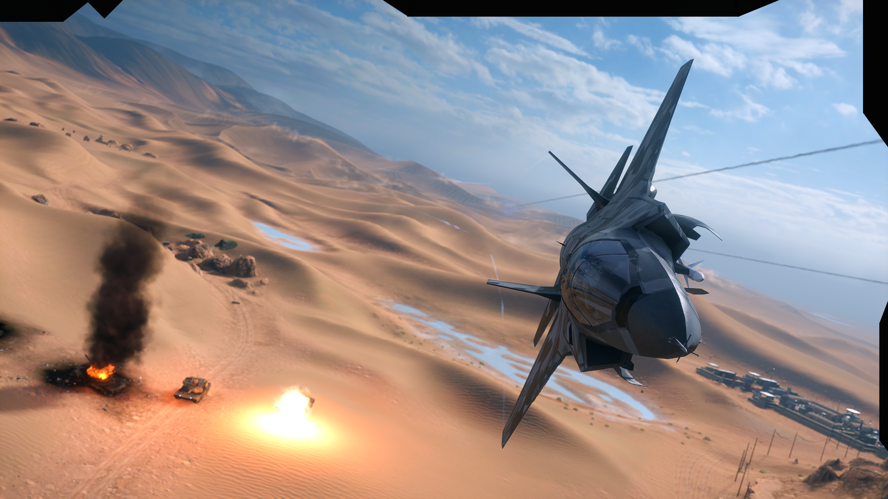

BEST FPS ACTION GAME EVER - IGN
Battlefield Series
Battlefield is a series of first-person shooter video games that started out on Microsoft Windows and OS X with Battlefield 1942, which was released in 2002. The series is developed by Swedish company EA DICE and is published by American company Electronic Arts. The series features a particular focus on large maps, teamwork and vehicle warfare. The PC games in the series are mainly focused on online multiplayer. The Battlefield series has been played by more than 50 million players worldwide as of 2012, across 11 games and 12 expansion packs released since its inception in 2002.

Battlefield series games usually focus on large, online multiplayer battles. Playing in squads has become a major element of games
in the series.Since Battlefield 2, the series centrally recorded online stats for each player, allowing users to
receive rank promotions and weapon unlocks based on their performance as well as awards such as medals, ribbons, and pins.
 Battlefield series games usually focus on large, online multiplayer battles. Playing in squads has become a major element of games
in the series.Since Battlefield 2, the series centrally recorded online stats for each player, allowing users to
receive rank promotions and weapon unlocks based on their performance as well as awards such as medals, ribbons, and pins.
Battlefield series games usually focus on large, online multiplayer battles. Playing in squads has become a major element of games
in the series.Since Battlefield 2, the series centrally recorded online stats for each player, allowing users to
receive rank promotions and weapon unlocks based on their performance as well as awards such as medals, ribbons, and pins.
A GLANCE TO THE BATTLEFIELD GAME
A class system is present within all the Battlefield games. Each class features a different type of primary weapon along with different equipment, differentiating roles on the battlefield. The ability to engage other players in melee combat with a knife has been present in Battlefield games. Since Battlefield 2142, the series has included an award of dog tags for each player killed using a knife.
GET MORE GAME. VISIT EA.COM
ALL BATTLEFIELD GAMES